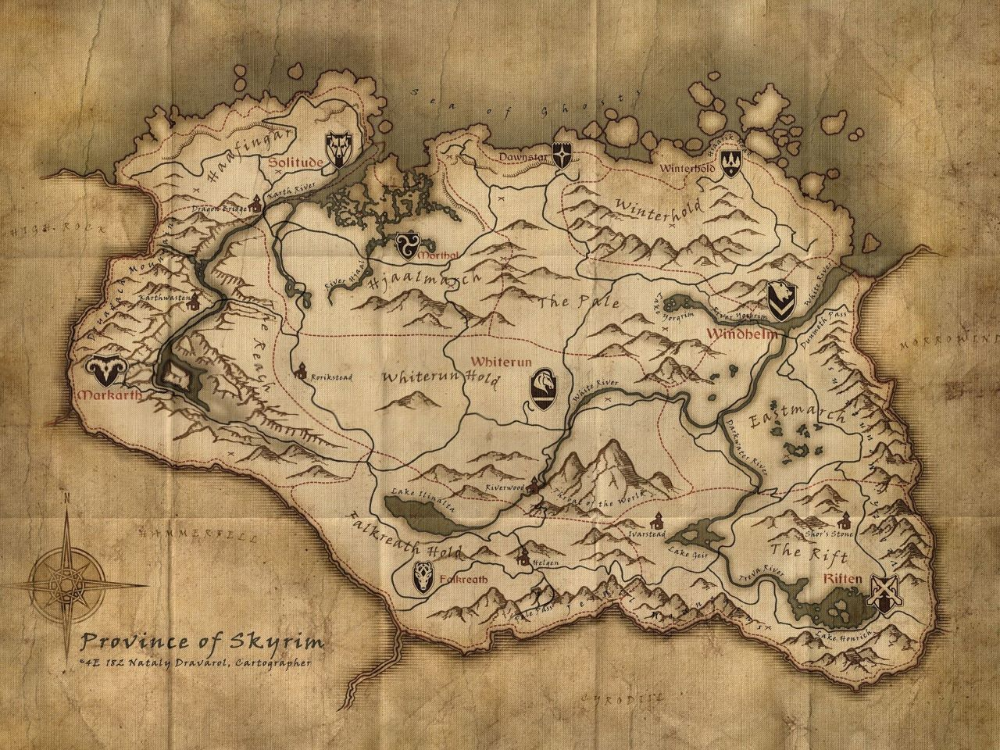

The Elder Scrolls V: Skyrim is the fifth game of The Elder Scrolls series developed by Bethesda Game Studios and published by Bethesda Softworks.
It was made in 2011 and it follows the events of the 2006 game The Elder Scrolls IV: Oblivion.
TES V: Skyrim is an open world, action role-playing video game that allows players to follow the story of and play as the Dragonborn.
The continent of Tamriel, the fictional setting for The Elder Scrolls games, is made up of nine provinces.
The snow-covered and mountainous region of Skyrim, the setting for TES V: Skyrim, is the northern province of Tamriel.
It is the home of the Nord human race and the Snow Elves.
Skyrim contains the tallest mountain in all of Tamriel, the Throat of the World.
Similar to how Tamriel is divided into nine provinces, Skyrim is split into nine administrative regions called Holds, which differ in both climate and government.
Each Hold is governed by a Jarl who resides in the Hold's capital city.
The Jarls operate independently, but they are loyal to Skyrim's High King, who swears fealty to the Emperor of Tamriel.

This image was taken from The Elder Scrolls series of video games or from websites created and owned by Bethesda Softworks, the copyright of which is held by Bethesda Softworks.
All trademarks and registered trademarks present in the image are proprietary to Bethesda Softworks, the inclusion of which implies no affiliation with me.
The use of such images is believed to fall under the fair dealing clause of copyright law.
The nine Holds of Skyrim are separated geographically and politically with Eastern Skyrim containing The Pale, Winterhold, Eastmarch, and The Rift (collectively referred to as the Old Holds) while Western Skyrim consists of Haafingar, Hjaalmarch, The Reach, Whiterun, and Falkreath.
The Old Holds are connected to each other by history, having been inhabited by the ancient Nords, so they are initially aligned with the Stormcloaks—the political faction that rebels against the Empire—during the Skyrim Civil War, an event that takes place in the game.
On the other hand, Western Skyrim is influenced by Cyrodiil, High Rock, and Hammerfell (other provinces of Tamriel) so these Holds side with the Imperial Legion—the political faction that opposes the Stormcloaks—in the Skyrim Civil War, also called the Stormcloak Rebellion.